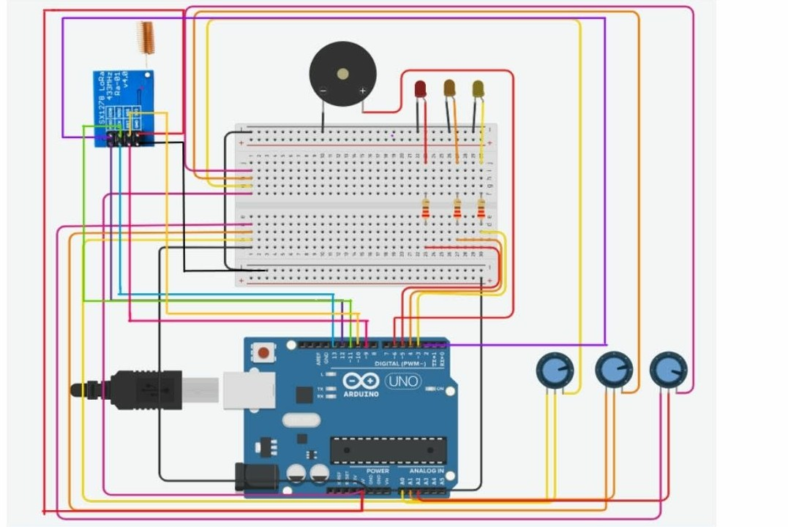

LoRa-Based Water Level & Flood Indicator System
A long-range flood monitoring prototype built with Arduino UNO and LoRa modules to detect critical water levels and trigger visual and buzzer alerts in remote areas.
- Arduino UNO + LoRa
- Conductive sensors
- Real-time alerts